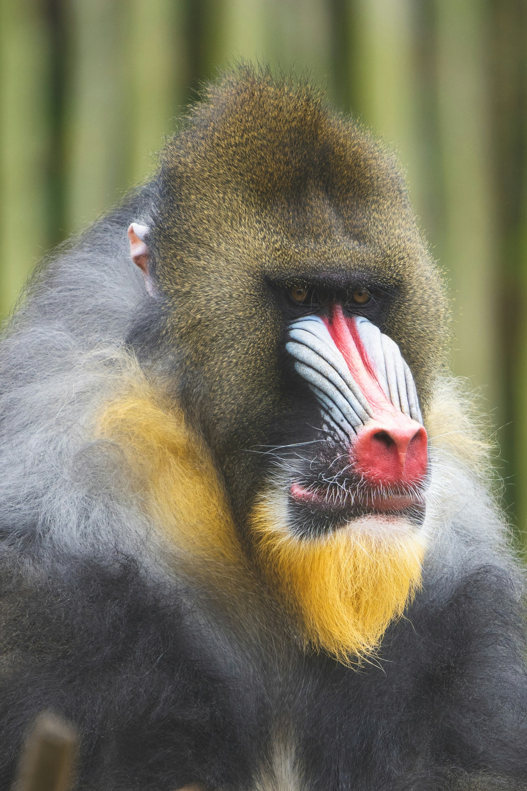
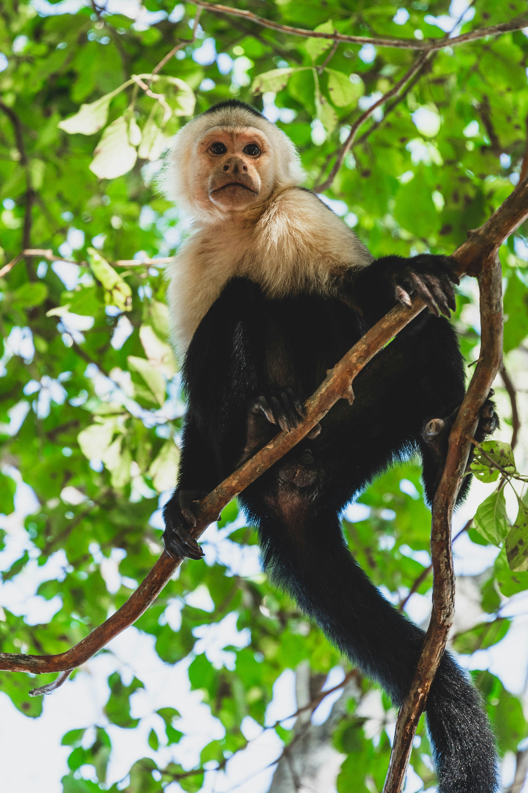
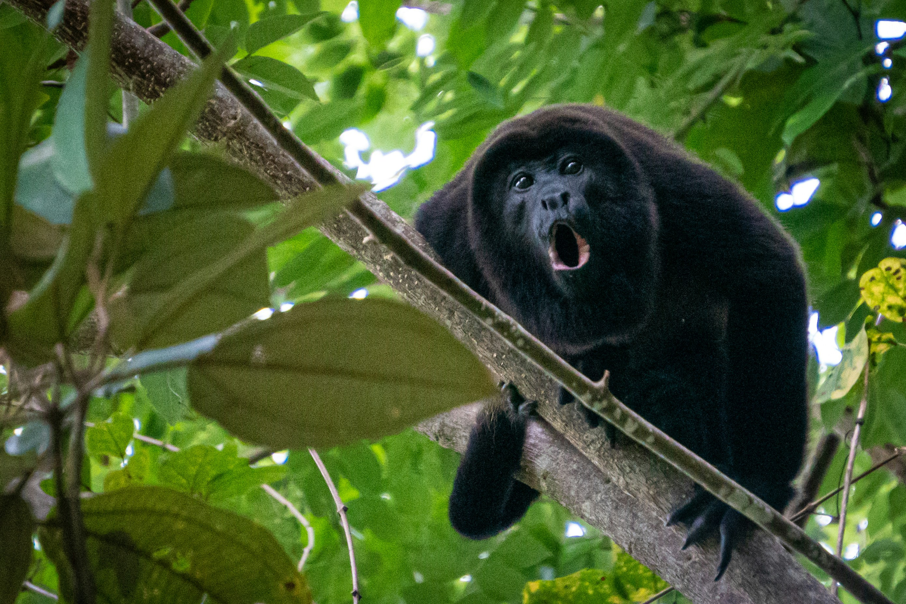

Monkeys of the World
Mandrill Monkey

The mandrill is a large, ground-dwelling monkey that is native to the rainforests of central Africa.
It is the largest species of monkey and is known for its colorful face and rear end.
- Scientific Name: Mandrillus Sphinx
- Habitat: Rainforests of Central Africa
- Diet: Omnivorous, primarily fruits and seeds
- Social Structure: Lives in large groups called troops
- Conservation Status: Vulnerable due to habitat loss and hunting
Proboscis Monkey

The proboscis monkey is a large, arboreal primate native to the island of Borneo.
It is known for its distinctive long nose and large belly, which is a result of its unique digestive system that allows it to
eat a diet primarily consisting of leaves.
- Scientific Name: Nasalis Larvatus
- Habitat: Mangrove forests and riverine forests of Borneo
- Diet: Primarily leaves, fruits, and seeds
- Social Structure: Lives in small groups or harems
- Conservation Status: Endangered due to habitat loss and hunting
Spider Monkey

Spider monkeys are a type of New World monkey known for their long limbs and prehensile tails, which
they use to swing through the trees in their rainforest habitats.
They are social animals that live in large groups and are known for their vocalizations and acrobatic movements.
- Scientific Name: Atelidae Family
- Habitat: Tropical rainforests of Central and South America
- Diet: Primarily fruits, nuts, and seeds
- Social Structure: Lives in large, fluid social groups
- Conservation Status: Vulnerable due to habitat loss and hunting
Howler Monkey

Howler monkeys are known for their loud vocalizations, which can be heard over long distances in the rainforest.
They are arboreal primates that live in social groups and are primarily folivorous, meaning they eat a diet consisting mainly of leaves.
- Scientific Name: Alouatta Genus
- Habitat: Tropical rainforests of Central and South America
- Diet: Primarily leaves, fruits, and flowers
- Social Structure: Lives in small family groups
- Conservation Status: Some species are endangered due to habitat loss